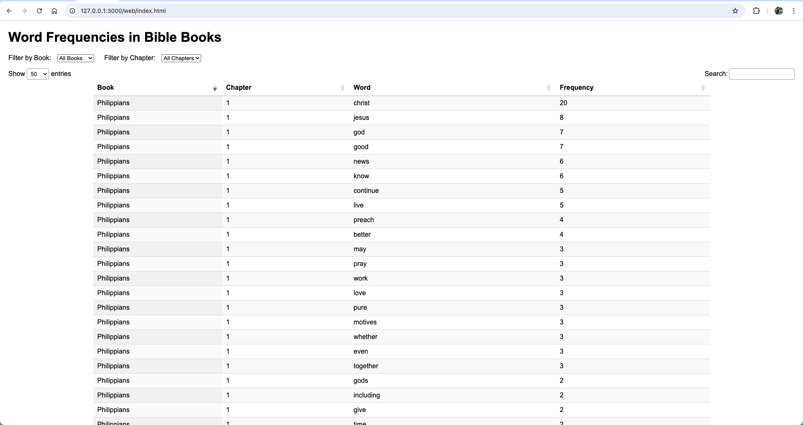
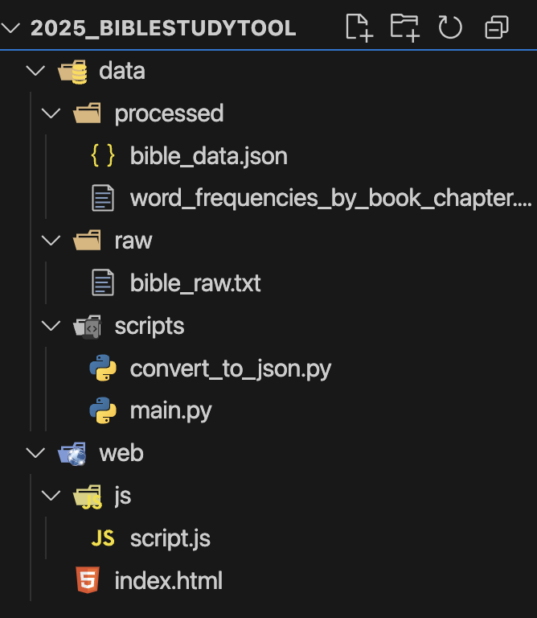

April 2025 – Current
Developed a backend pipeline for processing and analyzing textual data from the New Testament books Galatians, Ephesians, Philippians, Colossians, and Philemon.
Python, Pandas, HTML/CSS, CSV
Manual analysis of large text volumes is inefficient. The goal was to automate unique word extraction and frequency counting for easier academic research and study.
Built a Python pipeline that reads input text, cleans and tokenizes it, removes common stopwords, and generates frequency counts. Results are output to CSV and searchable HTML files.
Linking words to original verse and increased user functionality.
GitHub: [Bible Tool Repository]
 